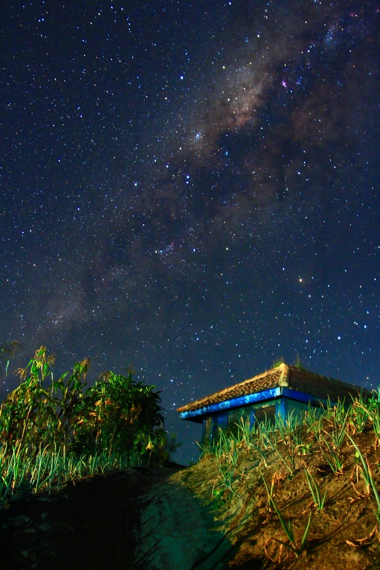

What Planets Could Send UFOs
This page consists of planets that can support life forms.

Reserach
With more and more studies appearing thanks to the created organisations such as SETI with the advancement of technology – more than 300 million worlds have been confirmed with Earth like conditions scattered across the Milky Way galaxy. In 1961, with The Drake equation it was suggested that there were other worlds orbiting stars other than the sun but couldn’t be confirmed but over the past dedicated theses planets are extremely common and even outnumber the stars in the Milky Way.
The Future
Now that scientist have a rough idea of how many worlds are like Earth, they can continue working through the variables in the Drake Equation.